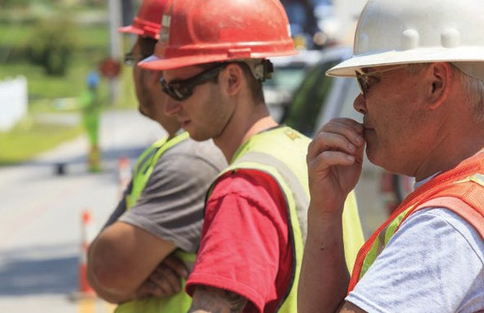

3.4 – ARBEJDSMARKEDET
sidde 117
De fleste i den erhvervsaktive alder deltager på det danske arbejdsmarked. Det gælder både mænd og kvinder. I 2024 var 76,3 procent af befolkningen (16-66årige) – 78,4 procent af mændene og 74,2 procent af kvinderne – i beskæftigelse.
Desuden er det danske arbejdsmarked kendetegnet ved, at arbejdskraften gene relt er godt uddannet. Det har i mange år været målet, at så godt som alle skulle have en uddannelse efter folkeskolen, hvilket dog ikke er lykkedes i helt det omfang, man havde håbet. Til gengæld er Danmark et af de lande i verden, der har den stærkeste tradition for efter- og videreuddannelse, det vil sige løbende uddannelse i løbet af arbejdslivet. Uddannelse er også mere og mere nødvendig, for mange af de jobs, der ikke kræver uddannelse, er overtaget af maskiner eller robotter, flyttet til udlandet eller ganske enkelt sparet væk.
Man taler ofte om en særlig dansk arbejdsmarkedsmodel, som har rødder mere end 100 år tilbage i tiden. Under den tidlige industrialisering i slutningen af 1800tallet opstod der gradvist en større arbejderklasse i byerne. Arbejderne fandt sammen i fagforeninger på de forskellige fagområder, hvis overordnede hoved organisation er Fagbevægelsens Hovedorganisation (FH), der havde til formål at kæmpe for bedre løn- og arbejdsvilkår. Som svar herpå slog arbejdsgiverne sig sammen i Dansk Arbejdsgiverforening, som i dag hedder DA.
Flere af de principper, der ligger til grund for det danske arbejdsmarked, stammer fra Septemberforliget, som arbejdsmarkedets parter indgik i 1899. Forliget kaldes derfor også for ”Arbejdsmarkedets Grundlov” og indebærer blandt andet, at fagforeninger og arbejdsgiverorganisationer anerkender hinanden som berettigede til at forhandle på deres medlemmers vegne.
De to parter kan altså indgå aftaler, der dækker flere grupper af arbejdsgivere og lønmodtagere. En sådan aftale kaldes en overenskomst. Den fastlægger typisk løn- og arbejdsvilkår. September-forliget slår også fast, at det er arbejds giveren, der leder og fordeler arbejdet, og som kan ansætte og afskedige medar bejdere. Endelig indebærer forliget en såkaldt fredspligt. Det betyder, at strejke (når lønmodtagerne nedlægger arbejdet) og lockout (når arbejdsgiverne sender medarbejderne hjem) ikke er tilladt, når der er indgået en overenskomst.
Overordnet set bygger den danske arbejdsmarkedsmodel på disse fem centrale elementer:
• Hovedparten af arbejdsstyrken er organiseret i fagforeninger. • Arbejdsmarkedets parter aftaler selv løn- og arbejdsvilkår på arbejdsmar kedet (selvregulering). Staten blander sig som hovedregel ikke heri som i visse andre lande, medmindre parterne efter mange forhandlinger ikke ser ud til at kunne blive enige.
Læremateriale Til Indfødsretsprøven
sidde 118
• En meget stor del af arbejdsmarkedet er dækket af kollektive overenskomster. • Der foregår et såkaldt trepartssamarbejde mellem lønmodtagere, arbejds givere og staten om forholdene på arbejdsmarkedet. • Der er fleksibilitet og sikkerhed (flexicurity). Det er således let at hyre og fyre medarbejdere i Danmark, men de arbejdsløse får også understøttelse fra det offentlige, som delvis er selvbetalt.
HØJ ORGANISATIONSGRAD
På det danske arbejdsmarked er det store flertal af lønmodtagerne fagligt orga niseret, selvom andelen dog er faldet de seneste årtier. Næsten to ud af tre (68 procent) af lønmodtagerne er (i 2025) medlem af en fagforening. Det er næsten kun de nordiske lande, der har så høj en organisering. Fagforeningen arbejder for at sikre medlemmerne de bedst mulige vilkår på arbejdspladserne. Der er fagforeninger både for privatansatte og for offentligt ansatte.
Både fagforeningerne og arbejdsgivernes organisationer er samlet i landsdæk kende forbund og hovedorganisationer. Den største hovedorganisation er Fagbe vægelsens Hovedorganisation (FH).
FH er en paraplyorganisation for i alt cirka 600 faglige forbund og organiserer cirka 1,3 millioner medlemmer. DA er arbejdsgivernes hovedorganisation og organiserer 11 arbejdsgiverorganisationer med cirka 23.000 virksomheder inden for blandt andet industri, handel, transport, service og byggeri. Dansk Industri (DI) er med sine 23.000 medlemsvirksomheder, der beskæftiger cirka 650.000 medarbejdere, Danmarks største arbejdsgiver- og erhvervsorganisa tion og DA’s største medlemsorganisation. Den næststørste erhvervsorgani sation er Dansk Erhverv, som repræsenterer 18.000 virksomheder, der ofte er mindre end virksomhederne i DI.
Der er foreningsfrihed i Danmark. Det betyder blandt andet, at den enkelte lønmodtager selv må beslutte, om han eller hun ønsker at være medlem af en fagforening og i givet fald hvilken. Det betyder også, at det er forbudt for en arbejdsgiver at afskedige en medarbejder, fordi vedkommende er medlem af en fagforening, ligesom det er forbudt at afskedige en medarbejder, fordi denne ikke er medlem af en fagforening. I forbindelse med nyansættelse må der heller ikke stilles krav om, at en medarbejder skal være medlem af en bestemt fagforening.
SELVREGULERING OG KOLLEKTIVE OVERENSKOMSTER
Staten blander sig således ikke i løn og arbejdsvilkår, så længe parterne selv er i stand til at indgå aftaler på disse områder. Aftalerne omfatter også emner, som i de fleste andre lande ville blive afgjort ved love vedtaget af parlament og regering. Det kan være arbejdstid, overtidsbetaling, opsigelsesvarsler eller mindsteløn. Således har Danmark ingen lovbestemt mindsteløn, men aftalerne
Læremateriale Til Indfødsretsprøven
sidde 119
mellem fagforeninger og arbejdsgiverorganisationerne har reelt samme virk ning. Et andet eksempel er lønmodtagernes pension, hvor arbejdsmarkedets parter har aftalt en arbejdsmarkedspension oven i den folkepension, staten betaler. I de seneste år har man også aftalt, at der betales fuld løn inklusiv pension i en større del af den periode, hvor man har forældreorlov.Vejar
Vejarbejdere.
Det er også arbejdsmarkedets parter, der selv søger at løse de konflikter, der måtte opstå. Grundtanken er, at arbejdsmarkedets parter hurtigere og bedre kan tilpasse aftalerne til den enkelte branche eller den enkelte virksomhed. Og når parterne selv har været med til at indgå en aftale, så accepterer de også dens vilkår. Mere end 80 procent af det danske arbejdsmarked er dækket af kollektive overenskomster. En kollektiv overenskomst er en aftale mellem en fagforening og en arbejdsgiver eller arbejdsgiverorganisation om løn- og arbejdsvilkår inden for et bestemt område, som parterne selv afgrænser i aftalen. En arbejdsgiver, som har indgået en overenskomst, er forpligtet til at give alle de ansatte de løn- og arbejdsvilkår, som fremgår af overenskomsten. Det gælder for eksempel aftaler om løn, pension, arbejdstid, ferie og opsigelse.
Hvis ikke parterne bliver enige om en ny overenskomst, når en eksisterende overenskomst udløber, bliver der konflikt på arbejdsmarkedet. Det vil sige, at lønmodtagerne strejker, eller arbejdsgiver kan lockoute deres ansatte (sende dem hjem fra arbejde uden løn).
Læremateriale Til Indfødsretsprøven

sidde 120
For at afværge konflikter på arbejdsmarkedet har staten siden 1910 haft nedsat en såkaldt Forligsinstitution, som ofte omtales som ’forligsmanden’. Forligs manden kan, hvis der er udsigt til konflikt mellem arbejdsmarkedets parter, for eksempel indkalde til forhandlinger mellem parterne eller fremsætte et såkaldt mæglingsforslag, som er et forslag til et forlig (kompromis) mellem parterne. Forligsmanden kan også udskyde en truende arbejdsmarkedskonflikt, typisk med et par uger.
Det sker relativt sjældent, at der bliver storkonflikt på arbejdsmarkedet, men det er dog sket flere gange. Sidst der var en storkonflikt på det private arbejds marked, var i 1998. Den indebar for eksempel, at mange busser ikke kørte, og at butikkerne ikke fik kørt varer ud. Regeringen og Folketinget har så typisk, som de også gjorde det i 1998, forholdsvis hurtigt lavet en lov om en overenskomst, så lønmodtagerne vender tilbage på arbejde, og situationen bliver normal igen. I de tilfælde har Folketingets lov altid taget udgangspunkt i et mæglingsforslag, som forligsmanden på arbejdsmarkedet har fremsat. I den forbindelse taler man om at ’ophæve en mæglingsskitse til lov’.
TREPARTSSAMARBEJDE OG FLEXICURITY
Staten samarbejder også typisk løbende med arbejdsmarkedets parter om at udforme den del af arbejdsmarkedspolitikken, der fastsættes gennem lovgivning.
Det gælder for eksempel regler om arbejdsmiljø, arbejdsformidling, arbejds markedsuddannelser og arbejdsløshedsforsikring. Dette samarbejde kaldes for trepartssamarbejde, fordi det består af tre parter: staten, arbejdsgiverne og lønmodtagerne. Samarbejdet skal sikre et arbejdsmarked, der både er fleksibelt for arbejdsgiverne og trygt for lønmodtagerne.
Fleksibiliteten består i, at det er relativt nemt for arbejdsgiverne at afskedige medarbejdere, når økonomien er dårlig, samt at ansætte medarbejdere, når det går godt. Trygheden består i, at lønmodtagerne har en økonomisk sikkerhed i form af en arbejdsløs hedsunderstøttelse, hvis de mister deres job. Dermed er det også mindre risikabelt at skifte job. Lønmod tagerne er også sikret hjælp til at komme tilbage på arbejdsmarkedet, for eksempel gennem uddannelse, praktikforløb eller anden aktivering. Denne kombination af fleksibilitet og sikkerhed (som på engelsk hedder security) omtales ofte som den danske flexicurity-model.FH’s hovedkvarter. FH’s hovedkvarter.
Læremateriale Til Indfødsretsprøven
Fonte: Læremateriale til Indfødsretsprøven, SIRI.